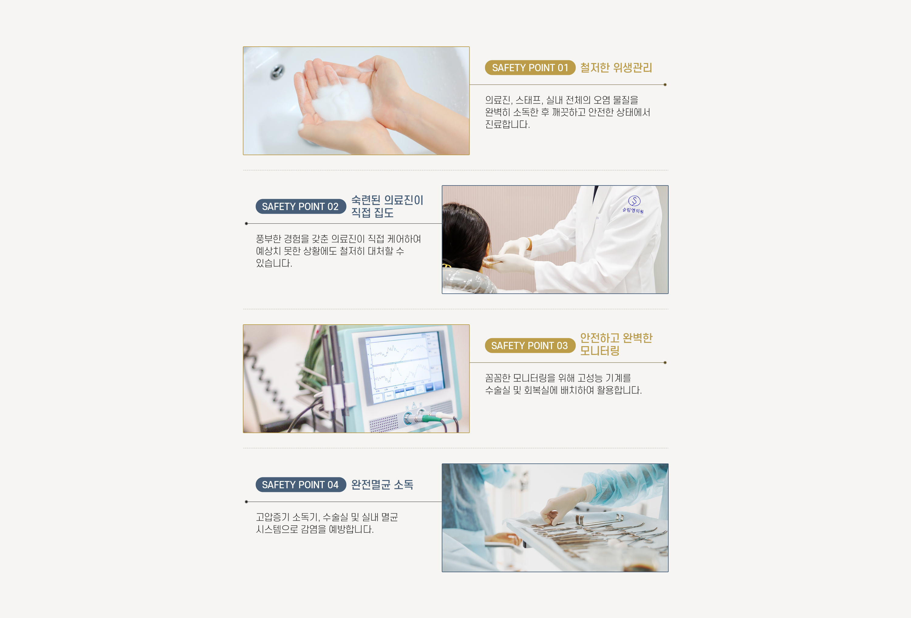
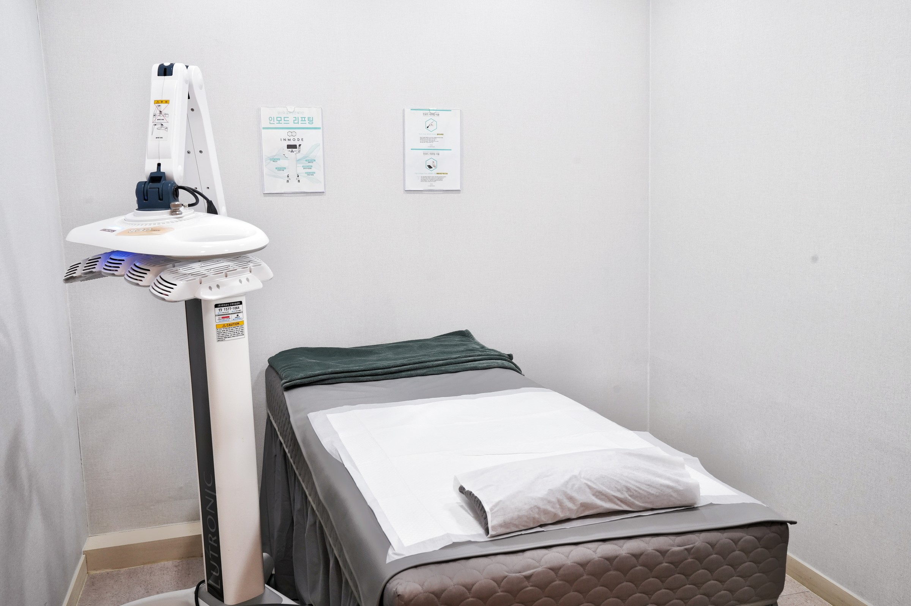

01
개인별 체형과 특성
같은 고민도 체형과 상태에 따라 접근은 달라질 수 있습니다. 상담과 확인을 통해 개인에게 맞는 방향을 살핍니다.
한 사람의 체형과 고민을 이해하는 것에서
슬림영의 진료는 시작됩니다.
사람마다 체형과 고민, 원하는 변화의 방향은 다릅니다. 슬림영의원은 정해진 답을 먼저 제시하기보다 충분히 듣고 개인의 상태를 살피는 과정을 중요하게 생각합니다.
상담에서 확인한 내용을 바탕으로 한 사람에게 맞는 진료 방향을 함께 찾는 것. 그것이 슬림영이 추구하는 맞춤 진료의 시작입니다.

변화의 방향을 결정하기 전, 현재의 상태와 기대하는 바를 충분히 확인합니다.
고민과 기대하는 변화의 방향을 먼저 듣습니다.
사람마다 다른 체형과 상태를 세심하게 확인합니다.
확인한 내용을 바탕으로 개인에게 맞는 진료 계획을 안내합니다.
“개인에게 어울리는 방향은
충분한 이해에서 시작됩니다.”
같은 고민도 체형과 상태에 따라 접근은 달라질 수 있습니다. 상담과 확인을 통해 개인에게 맞는 방향을 살핍니다.

환자 상태를 확인하는 장비와 수술·시술 과정의 환경을 중요하게 생각합니다.

1인 회복실과 회복 관리를 통해, 진료 이후의 과정까지 편안하게 이어지는 것을 중요하게 생각합니다.
수술 후 마취에서 회복한 환자분을
대표원장이 직접 찾아갑니다.
몸 상태와 불편한 점을 살피고,
수술 결과에 대해서도 직접 설명하며
환자분의 궁금증을 확인합니다.
수술 후의 작은 확인과 대화까지,
슬림영의원이 중요하게 생각하는
진료의 과정입니다.
상담 · 상태 확인 · 계획 · 회복까지, 각 과정에서 환자를 먼저 생각합니다.

1인 회복실에서 편안하게 회복하실 수 있도록
공간을 마련하고, 마취에서 회복한 후에는
대표원장이 직접 방문해 환자분의 상태를 확인합니다.
개인마다 다른 체형과 고민을 충분히 살피고, 상담을 바탕으로 각자에게 어울리는 방향을 함께 찾는 것을 중요하게 생각합니다.
고민과 원하는 변화의 방향을 듣고 개인의 상태를 확인한 뒤, 상담 내용을 바탕으로 진료 계획을 안내합니다.
슬림영의원 공식 홈페이지의 온라인 상담 또는 진료 예약 페이지를 이용할 수 있으며, 대표전화 02-318-2350으로도 문의할 수 있습니다.